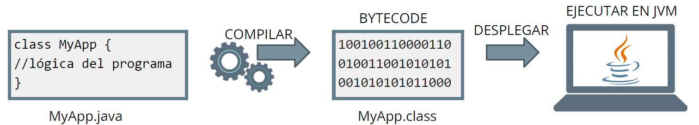
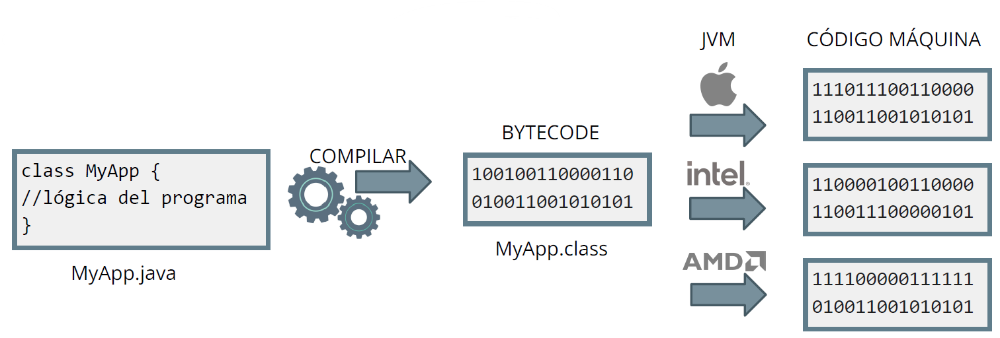
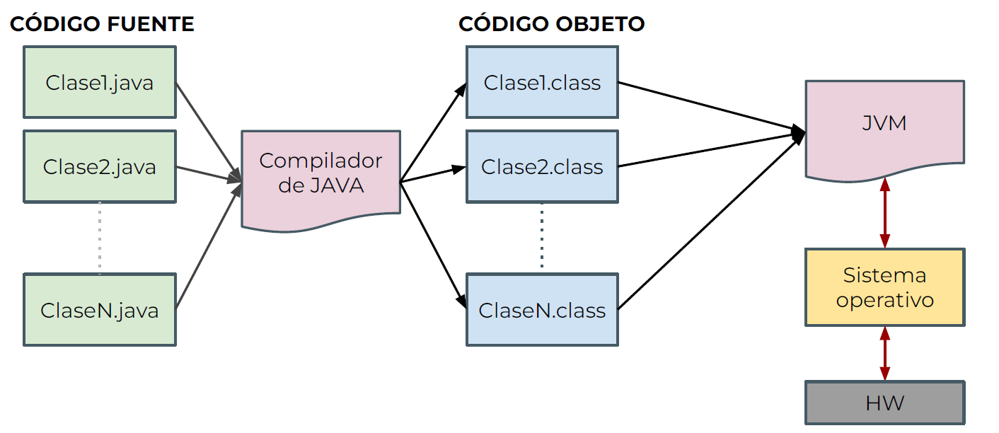
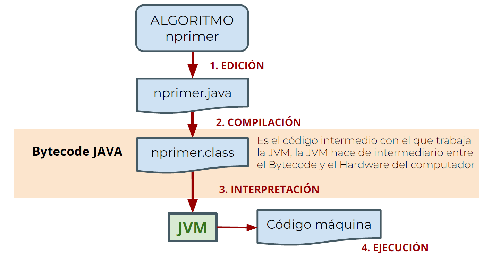

El proceso es el siguiente:
En primer lugar creamos un archivo con extensión java, que es el código fuente de nuestro algoritmo. Más tarde ese código es compilado y obtenemos un archivo con extensión class. Ese archivo class es el BYTECODE JAVA.
A continuación, ese BYTECODE JAVA es interpretado por la Máquina virtual JAVA, y mediante un compilador JIT se obtiene el código máquina. En último lugar, el código máquina es ejecutado por el Hardware del dispositivo.
Ese archivo class en BYTECODE JAVA es exactamente el mismo, independientemente de la plataforma. Es la JVM la que se encarga de interpretar ese BYTECODE y convertirlo en código máquina específico para ese hardware (dispositivo/arquitectura).
Cada tipo de HW obtiene un código máquina distinto.
Compilación y ejecución en Java.
 Para usar un programa creado en Java se necesitan el JRE (Java Runtime Environment) y la JVM (Máquina Virtual Java).
Para crear un programa en Java se necesitan el JDK (Java Development Kit) y un editor de código (como VSCode, IntelliJ, Eclipse...). El JDK es la herramienta básica para crear programas usando el lenguaje Java y se descarga desde la página oficial de Java (en la web de Oracle).
En VS Code:
// Aplicación HolaMundo de ejemplo
class HolaMundo {
public static void main( String args[] ) {
System.out.println( "Hola Mundo!" );
}
}
// Aplicación HolaMundo de ejemplo //Las dos barras sirven para hacer un comentario, para mejorar la lectura del código, y no se ejecutan.
class HolaMundo { //Declaración de la clase 'HolaMundo'
public static void main( String args[] ) { //Declaración del método main
System.out.println( "Hola Mundo!" ); //Instrucción para imprimir por pantalla una cadena de texto. Las instrucciones se separan con punto y coma
} //Fin del método main
} //Fin de la clase 'HolaMundo'
La salida se realiza a partir de la clase System.out. A partir de dicha clase podemos acceder a los siguientes métodos:
print: Imprime por pantalla una cadena de tipo String. Se pueden utilizar otros tipos básicos de variables, ya que se hace una conversión a partir de su valor. Además podemos utilizar el operador “+” para concatenar Strings. Todos los literales deben ir entre comillas dobles, a excepción de un único carácter, que en ese caso puede ir también entre comillas simples.
System.out.print("Hola");
println: Igual que print, pero añade un salto de línea.
System.out.println("Hola con salto de línea");
Podemos concatenar texto entre comillas con los valores de las variables, para ello debemos utilizar el operador suma (+). Por ejemplo:
int resultado = 20;
System.out.print("El resultado es"+resultado);
La salida del programa será: → El resultado es20. Se deben tener en cuenta los espacios en blanco para separar el texto de los valores de las variables. Además, también podemos concatenar texto con el resultado de una expresión. Por ejemplo:
System.out.println("El resultado es "+resultado+5); //205
System.out.println("El resultado es "+(resultado+5)); //25
System.out.println(resultado+5); //25
Las variables se utilizan para almacenar los datos que manejan los programas. Pueden guardar todo tipo de información, desde cantidades numéricas y textos, hasta valores booleanos.
Como el propio nombre indica, los datos almacenados en dichas variables pueden “variar” a lo largo de la ejecución del programa.
Necesitamos un espacio de memoria donde poder almacenar los valores que tienen almacenados las variables en cada momento.
En casi cualquier lenguaje de programación podremos reservar esos "espacios", y asignarles un nombre con el que acceder a ellos. Esto es lo que se conoce como "variables".
Para no desperdiciar la memoria de nuestro ordenador, el espacio de memoria que hace falta "reservar" será distinto según el “tipo de datos” que queramos almacenar(enteros, reales, caracteres, cadenas, etc).
JAVA es un lenguaje con un tipado fuerte, esto significa que se debe indicar el tipo de datos que queremos guardar dentro de una variable. El tipo de tipado es una característica propia de cada lenguaje.
Esto hace a JAVA más “estricto” en la declaración de variables, esto normalmente se traduce en una mayor protección contra posibles errores. Por ejemplo:
El char: almacena un único carácter, puede ser una letra, un dígito numérico, o cualquier otro carácter alfanumérico. Ocupa 2 bytes y sigue un estándar llamado Unicode (que a su vez engloba a otro estándar anterior llamado ASCII).
El boolean: se usa para evaluar condiciones, y puede tener el valor "verdadero" (true) o "false" (false). Ocupa 1 bit.
El String: se utiliza para almacenar cadenas de caracteres, es decir, puede almacenar un conjunto de char. Aunque no es un tipo primitivo, es un tipo de dato muy utilizado.
La forma de "declarar" una variable en JAVA es detallando primero el tipo de datos que podrá almacenar y después el nombre(identificador) que daremos la variable. Además, se puede indicar un valor inicial a través del igual.
Para finalizar la asignación de la variable debemos introducir un punto y coma.
La declaración de variables funciona de la siguiente forma:
Además podemos asignar a una variable el valor de otra variable, e incluso, realizar operaciones con ellas. Se pueden declarar varias variables del mismo tipo "a la vez", separando con comas.
int cantidad = 5 + 2; //guardamos en cantidad un 7
int precio = 10; //guardamos en precio un 10
precio = 5; //modificamos el precio a 5
int precioFinal = cantidad * precio; //guardamos un 35 en precioFinal
precioFinal = precioFinal + 10; //guardamos 45 en precioFinal
int a = 5, b = 10; // "a" y "b" son enteros y valen 5 y 10
short c = -1, d, e = 4; // "c" vale -1, "d" no tiene valor, "e" vale 4
int f, g; // declaramos las variables "f" y "g" de tipo entero
Los nombres de variables pueden contener letras y números (pero no pueden comenzar con un número). Pueden contener símbolos, como el de subrayado, pero no podrán contener otros muchos símbolos, como los de las distintas operaciones matemáticas posibles (+,-,*,/), ni llaves o paréntesis.
El identificador de la variable es el nombre que damos a la variable.
Existen palabras reservadas que no se pueden utilizar como identificadores para las variables:
| abstract | assert | boolean | break | byte | case |
| catch | char | class | const | continue | default |
| do | double | else | enum | extends | false |
| final | finally | float | for | goto | if |
| implements | import | instanceof | int | interface | long |
| native | new | null | package | private | protected |
| public | return | short | static | strictfp | super |
| switch | synchronized | this | throw | throws | transient |
| true | try | void | volatile | while |
Para utilizar decimales se usa el punto, y una ‘f’ final para indicar el tipo float. Podemos utilizar una ‘d’ final para indicar que es de tipo double, pero no es obligatorio.
float f1 = 1f; // "f1" es de tipo float y vale 1.0
float f2 = 5.4f; // "f2" es de tipo float y vale 5.4
float f3 = 12E6f; // "f3" es de tipo float y vale 12000000
float f4 = 0.55E-2f; // "f4" es de tipo float y vale 0.0055
float f5 = -5.44E-2f; // "f5" es de tipo float y vale -0.0544
double d1 = 2; // "d1" es de tipo double y vale 2.0
double d2 = 4.001d; // "d2" es de tipo double y vale 4.001
double d3 = 1.51E-3; // "d3" es de tipo double y vale 0.00151
double d4 = 2.11E8d; // "d4" es de tipo double y vale 211000000
double d5 = -0.11E-3; // "d5" es de tipo double y vale -0.00011
El sistema hexadecimal es muy utilizado en computación, es un sistema de base 16. Esto significa que tiene 16 valores distintos para representar la información. Del 0 al 9 y las letras A, B, C, D, E y F.
Este uso tan extendido se debe a que las CPU utilizan el byte(8 bits) como unidad básica de memoria. Un byte representa 256 valores posibles, por lo tanto dos dígitos hexadecimales corresponden exactamente a un byte, 16 x 16 = 256. Debido a ello, podemos hacer las siguientes conversiones.
Para declarar variables de tipo entero en hexadecimal debemos escribir en primer lugar 0x:
byte num1 = 0x02; // almacena un 2
byte num2 = 0x0B; // almacena un 11
byte num3 = 0x12; // almacena un 18
Las variables booleanas son muy utilizadas en programación y sirven para evaluar condiciones. Este tipo de variables únicamente pueden almacenar dos valores, verdadero o falso. Son muy baratas, ocupan 1bit.
Para declarar variables de tipo booleano se utiliza la palabra boolean. Para asignar valores debemos utilizar las palabras reservadas true, y false. Las palabras reservadas nunca van entre comillas. Podemos asignar también el resultado de una expresión lógica a este tipo de variables.
boolean seguir = true; // correcto
boolean parar = false; // correcto
boolean seguir = 3 > 5; // false
boolean parar = 7 != 6; // true
Se pone su valor entre comillas simples: char letra = 'A';
En JAVA las variables de tipo char internamente funcionan como enteros, de hecho podemos cambiar su valor a través de operaciones aritméticas. Los valores más frecuentes están definidos en la tabla ASCII.
Una cadena de texto es un bloque de caracteres alfanuméricos, que usaremos para poder almacenar palabras y frases. Puede tener cero o más caracteres.
El valor de una variable de tipo String siempre debe ir entre comillas dobles.
Podemos "concatenar" cadenas (juntar dos cadenas para dar lugar a una nueva) con el signo +, igual que sumamos números. Por otra parte, la clase String tiene una gran cantidad de funciones (operaciones con nombre) que podemos aplicar para trabajar con ellas.
String nada = ""; //cadena vacía
String nombre = "Pepe";
String apellido = "Martínez";
String nombreCompleto1 = nombre + apellido; //PepeMartínez
String nombreCompleto2 = nombre + " " + apellido; //Pepe Martínez
String frase;
int cantidad = 20;
frase = nombre + " tiene " + cantidad +" años"; //Pepe tiene 20 años
frase = nombre + " tiene " + cantidad + 5 +" años"; //Pepe tiene 205 años
Métodos utilizados trabajando con String:
| Método | Descripción |
|---|---|
| length() | Devuelve la longitud (número de caracteres) de la cadena |
| charAt(int pos) | Devuelve el carácter que hay en cierta posición |
| toLowerCase() | Devuelve la cadena convertida a minúsculas |
| toUpperCase() | Devuelve la cadena convertida a mayúsculas |
| substring(int desde, int hasta) | Devuelve una subcadena: varias letras a partir de una posición dada |
| replace(char antiguo, char nuevo) | Devuelve una cadena con un carácter reemplazado por otro |
| trim() | Devuelve una cadena sin espacios blanco iniciales ni finales |
| startsWith(String subcadena) | Indica si la cadena empieza con una cierta subcadena |
| endsWith(String subcadena) | Indica si una cadena termina con una cierta subcadena |
| indexOf(String subcadena, [int desde]) | Indica la posición en que se encuentra una cierta subcadena (buscando desde el principio a partir de una posición opcional) |
| lastIndexOf(String subcadena, [int desde]) | Indica la posición en que se encuentra una cierta subcadena (buscando desde el final a partir de una posición opcional) |
| valueOf(objeto) | Devuelve un String que es la representación como texto del objeto que se le indique (número, boolean, etc.) |
| concat(String cadena) | Devuelve la cadena con otra añadida al final |
| equals(String cadena) | Mira si dos cadenas son iguales (lo mismo que ==) |
| equalsIgnoreCase(String cadena) | Mira si dos cadenas son iguales, pero despreciando las diferencias entre mayúsculas y minúsculas |
| compareTo(String cadena2) | Compara una cadena con la otra (devuelve 0 si son iguales, negativo si la cadena es menor que cadena2 y positivo si es mayor) |
En ningún momento estamos modificando el String de partida. Eso sí, en muchos de los casos creamos un String modificado a partir del original.
El método "compareTo()" se basa en el orden lexicográfico: una cadena que empiece por "A" se considerará "menor" que otra que empiece por la letra "B"; si la primera letra es igual en ambas cadenas, se pasa a comparar la segunda, y así sucesivamente. Las mayúsculas y minúsculas se consideran diferentes.
Un comentario extra sobre los Strings: Java convertirá a String todo aquello que indiquemos entre comillas dobles. Así, son válidas expresiones como "Prueba".length() y también podemos concatenar varias expresiones dentro de una orden System.out.println():
//Ejemplos de uso de funciones en String
String nombre = "Pepe";
String apellidos = "Martínez García";
String nombreCompleto = nombre + apellidos;
int longitud = nombre.length();
int longitud2 = "245".length();
char letra = apellidos.charAt(3);
String cadena1 = nombreCompleto.substring(0,4);
String cadena2 = " Hola ".trim();
String cadena3_1 = cadena1.substring(3,4);
String cadena3_2 = cadena1.substring(3,3);
String cadena3_3 = cadena1.substring(4,3);
String cadena4 = (cadena2 + "Hola").toLowerCase();
int posicion1 = cadena4.indexOf("o");
int posicion2 = cadena4.indexOf("hola");
int posicion3 = cadena4.indexOf("Hola");
| Operador | Operación | Operador | Operación |
|---|---|---|---|
| + | Suma o signo positivo | += | Suma y asignación |
| - | Resta o signo negativo | -= | Resta y asignación |
| * | Multiplicación | *= | Multiplicación y asignación |
| / | División | /= | División y asignación |
| % | Módulo (resto de división) | %= | Módulo y asignación |
| ++ | Incremento en 1 | -- | Decremento en 1 |
int a = 3, b = 2;
float f1 = 3f, f2 = 2f;
System.out.println("3 + 2 = "+a+b); // 3 + 2 = 32
System.out.println("3 + 2 = "+(a+b)); // 3 + 2 = 5
System.out.println(a+" + "+b+" = "+(a+b)); // 3 + 2 = 5
System.out.println(a+" - "+b+" = "+(a-b)); // 3 - 2 = 1
System.out.println(a+" x "+b+" = "+(a*b)); // 3 x 2 = 6
System.out.println(a+" / "+b+" = "+(a/b)); // 3 / 2 = 1
System.out.println(f1+" / "+f2+" = "+(f1/f2)); // 3.0 / 2.0 = 1.5
System.out.println(a+" / "+f2+" = "+(a/f2)); // 3 / 2.0 = 1.5
System.out.println(b+" % "+a+" = "+(b%a)); // 2 % 3 = 2
System.out.println(f2+" % "+f1+" = "+(f2%f1)); // 2.0 % 3.0 = 2.0
Hay varias operaciones muy habituales, que tienen una sintaxis abreviada en Java. Por ejemplo, para sumar 2 a una variable "a", la forma "normal" de conseguirlo sería: a = a + 2; pero existe una forma abreviada en Java: a += 2;
Al igual que tenemos el operador += para aumentar el valor de una variable, tenemos -= para disminuirlo, /= para dividirla y *= para multiplicarla. Por ejemplo, para multiplicar por 10 el valor de la variable "b" haríamos b *= 10;
También podemos aumentar o disminuir en una unidad el valor de una variable, empleando los operadores de "incremento" (++) y de "decremento" (--). Así, para sumar 1 al valor de "a", podemos emplear cualquiera de estas tres formas:
a = a+1; //2
a += 1; //3
a++; //4
Los operadores de incremento y de decremento se pueden escribir antes o después de la variable. Así, es lo mismo escribir estas dos líneas:
a++;
++a;
Pero hay una diferencia si ese valor se asigna a otra variable "al mismo tiempo" que se incrementa/decrementa:
int c=5;
int b=c++;
Guarda como resultado c = 6 y b = 5, se asigna el valor a "b" antes de incrementar "c". Sin embargo:
int c=5;
int b=++c;
Guarda como resultado c = 6 y b = 6, se asigna el valor a "b" después de incrementar "c".
//Ejemplos de operaciones matemáticas.
int a = 3, b = 2, c = 1;
a += b; // a = a + b → 5
c += a; // c = c + a → 6
b += a + b; // b = b + (a + b) → 9
c -= a; // c = c - a → 1
c *= a / 2; // c = c * (a / 2) → 2
b %= 5; // b = b % 5 → 4
b /= c; // b = b / c → 2
b *= a + b; // b = b * (a + b) → 14
a /= b - c * 5;// a = a / (b - c * 5) → 1
//Ejemplos de incrementos y decrementos
int a=1, b=2, c=3;
b = ++c; // b = (++c)
a += b++; // a = a + b++
a = a+++a; // a = (a++) + a
a -= b--; // a = a - b--
c = a++ - ++b; // c = a++ - (++b)
c -= ++a; // c = c - (++a)
a -= ++c; // a = a - (++c)
a -= c++; // a = a - c++
a -= --c; // a = a - (--c)
int a = 1; //En todas las instrucciones iniciamos a 1 una previamente
//------------------------------------------------------------------------
a = ++a; //guarda 2, todo ok
a = --a; //guarda 0, todo ok
a = a--; //1º(a=a→1) 2º(a--→0) 3º(a=1º→1)
a = a++; //1º(a=a→1) 2º(a++→2) 3º(a=1º→1)
a = a+a--; //1º(a+a→2) 2º(a--→0) 3º(a=1º→2)
a = a+a++; //1º(a+a→2) 2º(a++→2) 3º(a=1º→2)
//------------------------------------------------------------------------
a = a--+a--; // 1º(a→-1) 2º(1+0→1)
a = a--+a--+a--; // 1º(a→-2) 2º(1+0+(-1)→0)
a = a--+a--+a--+a--; // 1º(a→-3) 2º(1+0+(-1)+(-2)→-2)
a = a--+a--+a--+a--+a--; // 1º(a→-4) 2º(1+0+(-1)+(-2)+(-3)→-5)
a = a--+a--+a--+a--+a--+a--; // 1º(a→-5) 2º(1+0+(-1)+(-2)+(-3)+(-4)→-9)
En JAVA, al igual que en pseudocódigo, también tenemos las expresiones lógicas. En este tipo de expresiones el resultado será de tipo booleano. Es decir, verdadero o falso. Dichas expresiones están formadas por:
Además podemos asignar el resultado de una expresión lógica a una variable de tipo boolean
| Operador | Operación |
|---|---|
| == | Igual |
| != | Distinto |
| > | Mayor que |
| < | Menor que |
| >= | Mayor o igual que |
| <= | Menor o igual que |
int a = 0, b = 1;
boolean iguales = a == b; //false
//Ejemplos de asignación sobre variables boolean:
int precio1 = 10;
int precio2 = 30;
boolean barato = precio1 > precio2; //false
boolean iguales1 = 40 == (precio1 + precio2); //true
boolean iguales2 = 40 == precio1 + precio2; //true
boolean iguales2 = (40 == precio1) + precio2; //ERROR
boolean distintos = precio1 != precio2; //true
//Para comparar Strings se utiliza equals
String nombre1 = "Pepe";
String nombre2 = "Jose";
String nombre3 = "pepe"
boolean iguales1 = nombre1.equals(nombre2); //false
boolean iguales2 = nombre1.equals(nombre3); //false
boolean iguales3 = nombre1.equalsIgnoreCase(nombre3); //true